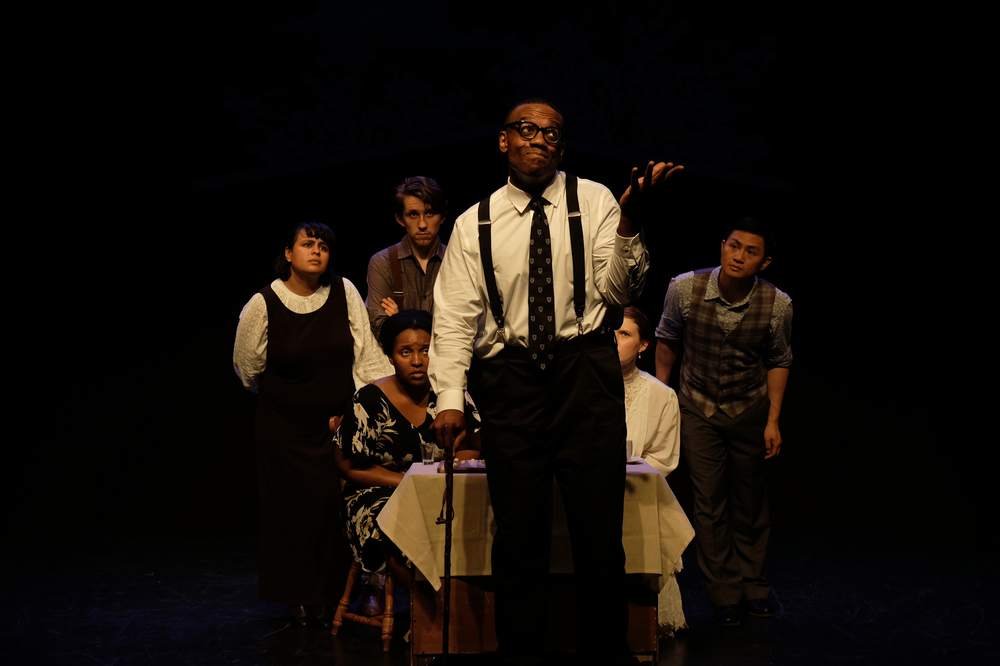
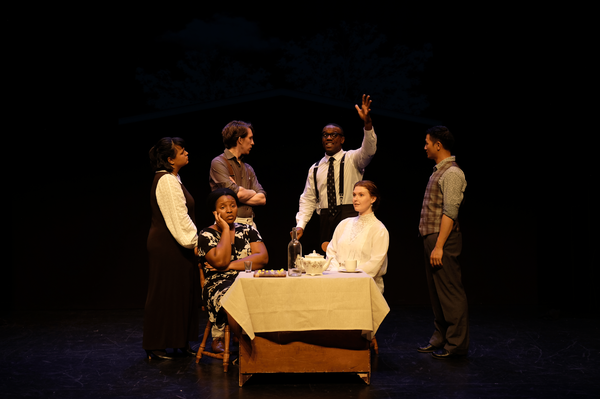
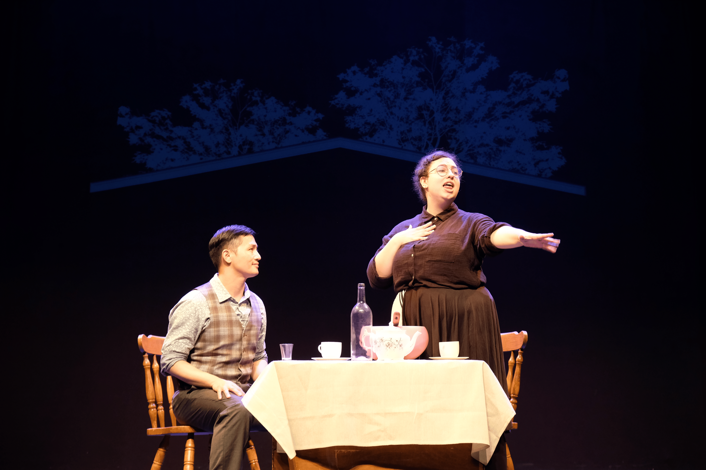
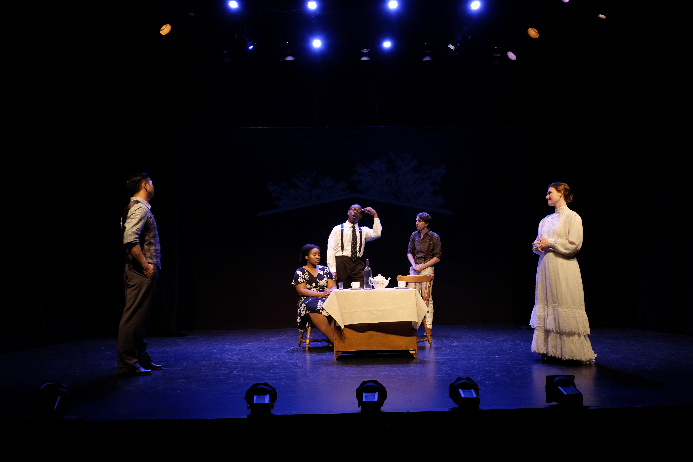
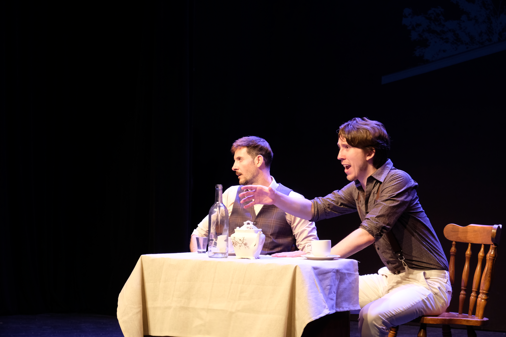

About Miscellania Theatre Company
Miscellania Theatre Company is a Milwaukee-based organization founded by Isabelle Rashkin, Mona Turks, and friends, united by a passion for creating fresh, original theatre. In 2022 Miscellania's operations moved to NYC, where we have continued to work on new work.
Our Mission
Our mission is to give actors, writers, designers, and directors the freedom to explore and learn in ways that feel authentic and exciting to them. Unlike traditional theatre organizations, we prioritize creativity over bureaucracy, cutting through the administrative hurdles that can often slow down or stifle a production. We focus on making the process as joyful, accessible, and collaborative as possible, so that everyone involved can fully engage with the work and have fun bringing it to life.
At MTC, we believe that theatre should be a space for curiosity, experimentation, and shared joy! A place where new ideas can flourish without unnecessary barriers, and every participant feels empowered to contribute to the creative process.


The Woman, Her Husband and Herself
Written by Isabelle Rashkin
The Woman Her Husband and Herself follows the tale of a woman who is now being followed by herself. A figment of her imagination, and a manifestation of all her shortcomings. The woman now needs to determine what is real between herself and her husband.
This production was staged in Milwaukee Wisconsin July 2021. After taking a year to write it, I gathered all the best performers I knew - my friends! We met for over 3 months learning the music, blocking, then finally deciding we wanted to show it off to our peers and colleagues. The result is the footage above, we had 3 performances and an "invited dress" (which is silly for a house musical) but through this experience we paved the way for us to do it again.


Warning Sign: An Original Time Capsule Musical
Music and Lyrics by Isabelle Rashkin, Book by Mona Turks
Warning Sign: An Original Time Capsule Musical tells the interweaving paths of four friends all connected by a time capsule. An allegory for climate change, when the time capsule ejects from the ground (and is rejected by the earth) the group take sides on whether or not to finally open what's inside.
Warning sign was staged in Milwaukee Wisconsin at The Brumder Mansion in August 2022. This musical was created on a much shorter timeline with more direct editing and scene writing help from Mona Turks. The goal of this production was to create a musical on a more structured timeline, and put it up with the same or more production elements than previously utilized. The Brumder mansion is a landmark of Milwaukee Wisconsin with a less-than-conventional stage set up. None the less we brought it to life.
Note: we taped this production so many times, and we were unable to have a singular recording where a phone did NOT go off in the audience. Maybe that is the real warning sign.
{kind=link}

Download{kind=link}

Download{kind=link}

Download{kind=link}

Download{kind=link}

DownloadVanya! the Musical
Book and Music by Isabelle Rashkin
Vanya! is a musical adaptation of the classic Chekov play "Uncle Vanya". This truncated version was written and produced for the 2024 New York Theatre Festival. Focusing on the main themes of love and and time, this production won "Best Musical" in the NYTF awards later that summer.
I was brought onto this production for playing "Nanny" and through a rapdid fire change of events I became responsible for directing and producing the production. I felt an innate responsibility to my peers and cast mates to create a piece that we could be proud of putting our time into. The turn around time from bringing me onto director and opening night was roughly 3.5 weeks. It was not on purpose that the third musical produced by Miscellania was on the tightest timeline we had ever worked on.